챔피언 커피를 언제든.
핸드드립의
신세계를 열다.
STORY
바리스 드립 3.0
세계 최초에서 최고가 되다.
생산성이 로봇의 존재 이유일까요? 바리스 드립은 향미와 여유라는 커피의 본질적 경험에 집중합니다. 무인화, 0.3mm 오차범위의 정밀 제어 등 첨단 로봇기술 사이 사이에 사용자 중심 기술과 커피 장인의 노하우를 이식했죠.
마침내, 최초의 상용화 핸드드립 로봇이 바리스타 챔피언의 드립을 실현하기에 이르렀습니다. 이제 당신이 원하는 언제든, 원하는 공간에서 최정상급 커피 경험을 만들 수 있습니다.
일단 5가지 핵심부터.
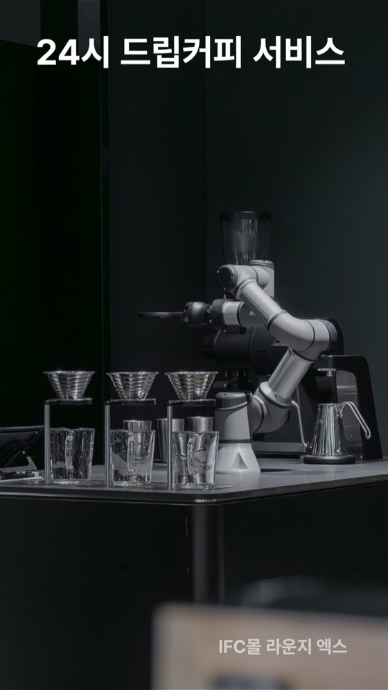
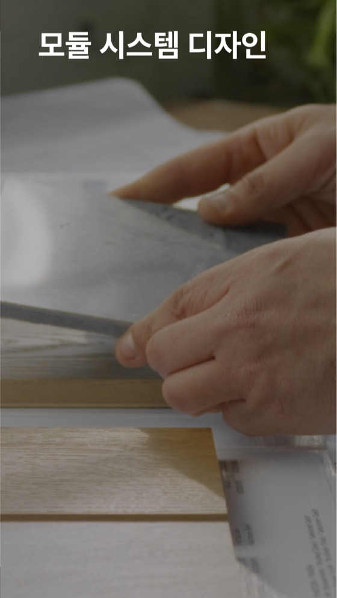
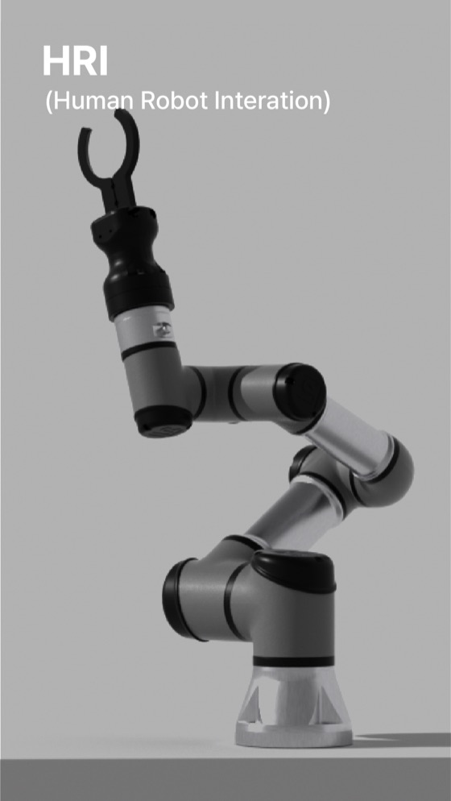
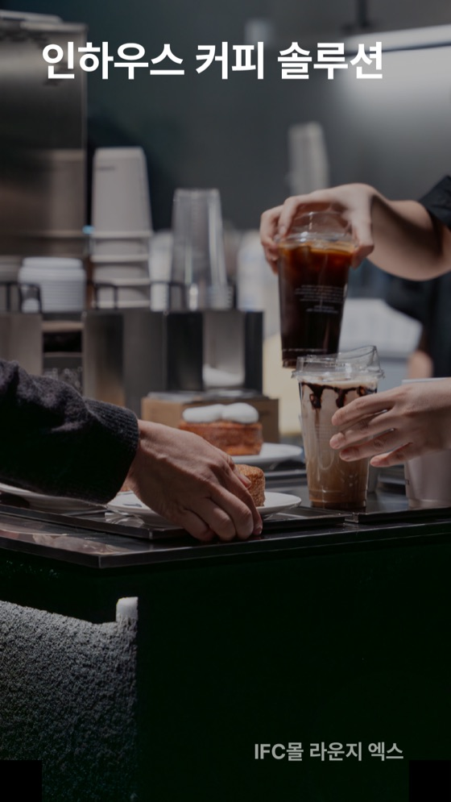
디테일 살펴보기.
원터치 핸드드립 서비스
버튼 하나로
핸드드립 카페 OPEN.
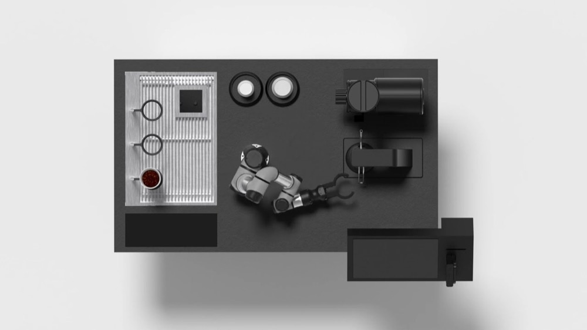
바리스 드립은 버튼 하나만 누르면 주문부터 그라인딩, 핸드드립까지 전과정을 수행합니다. 언제든 쉽게 전문가의 핸드드립 커피를 맛볼 수 있죠. 이동형 카페인 바리스 드립은 1평의 공간이 있다면 바리스 드립이 놓이는 어디든 핸드드립 카페가 됩니다.
초정밀 드립 모션
바리스 드립이 창조하는
드립의 미학.
드립 커피는 시간의 미학이라고도 합니다. 손목과 팔꿈치 각도, 그리고 높이와 속도까지 프로그래밍된 바리스 드립은 '빠르게' 보다는 '정확하게' 숙련된 바리스타의 모션을 구현해 풍미 있는 커피를 내립니다. 물론, 언제나 일정한 실력으로 말이죠.
모듈 시스템 디자인
모던. 클래식. 네츄럴.
원하는 모습으로.
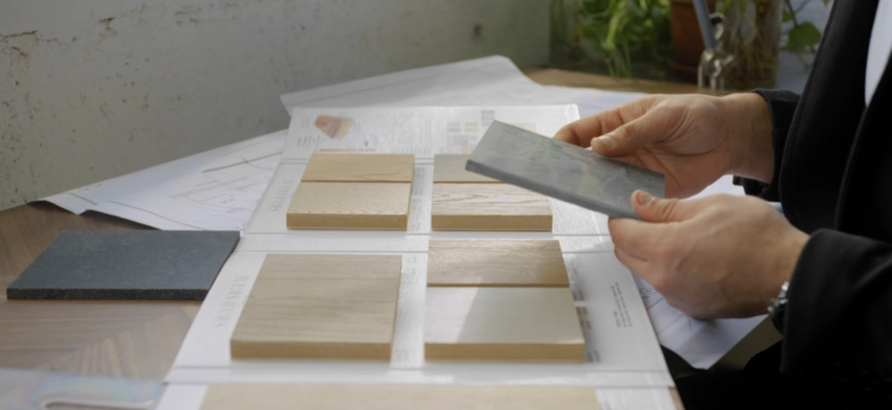
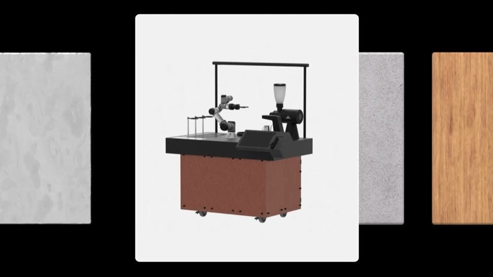
바리스 드립 스테이션은 다양한 소재와 컬러 옵션을 제공합니다. 파츠만 갈아 끼우면 간단히 공간의 분위기를 바꿀 수 있죠. 시간의 흔적을 닦고, 지우고, 가리는 수고로움도 가뿐히 덜어낼 수 있습니다.
HRI (Human Robot Interaction)
로봇에 영혼을 불어 넣는 마법.
우리는 사람과 로봇이 거리낌 없이 소통할 수 있는 HRI(Human-Robot Interaction) 기술을 연구해 적용합니다. 숨쉬고 인사하는 모션에 반영된 0.001단위의 디테일까지 반영됩니다.
"우리는 사람 앞에 로봇을 두지 않습니다."
- 숨쉬기
- 인사하기
인하우스 커피 솔루션
원두 로스팅도
17년 마스터가 직접.
바리스는 라운지엑스 로스터리의 최상급 원두를 사용합니다. 로스터리의 원두는 17년 경력의 커피 전문가 김동진 총괄 로스터가 관리합니다. 기후와 생두 컨디션 등 다양한 변수 속에서 의도한 풍미와 맛을 유지하기 위해 체계적인 사이클 관리와 더불어 수많은 품종에 대한 커핑 테스트가 진행됩니다.
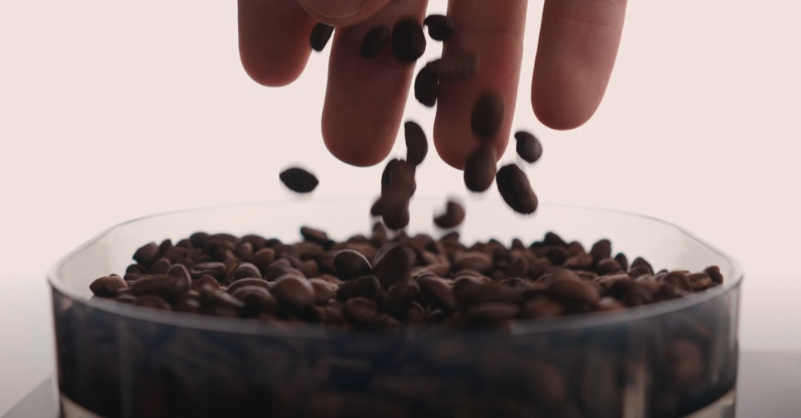
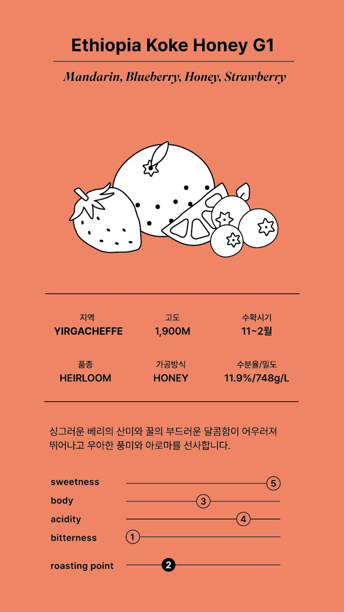
핸드드립 챔피언
정형용 콜라보.
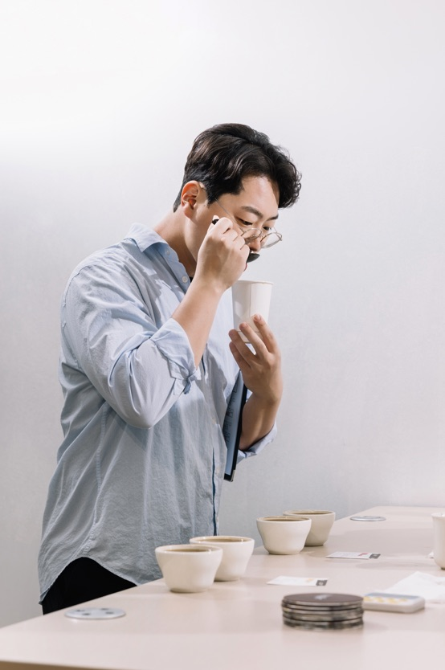
정형용 바리스타는 커피 브루잉을 주된 분야로 하여 브루잉 대회에서 챔피언과 준우승을 차지하며 파이널리스트로 이름을 올렸습니다. 그는 한잔의 커피가 소유한 본질적 가치에 집중하여 소비자에게 진정성과 가치를 보다 더 풍부하게 전달합니다. 그의 열정과 노력은 커피 문화의 진보와 소비자 경험의 향상을 위한 중요한 역할을 담당하고 있습니다.
About
스페셜티 커피를 단순히 한 잔의 음료로 보는 것이 아니라, 한잔의 커피가 소유한 본질적 가치에 집중하여 소비자에게 진정성과 가치를 보다 더 풍부하게 전달하고자 합니다.
Career
- 2019 KBrC 코리아 브루어스 컵 우승
- 2019 WBrC 월드 브루어스 컵 — 대한민국 국가대표
- 2020 KBrC 코리아 브루어스 컵 5위
- 2023 KBrC 코리아 브루어스 컵 준우승
카페 현장의 노하우
로봇 서비스에 반영해요.
바리스의 기술은 현장에서 실증됩니다. 쇼핑몰부터 라운지, 그리고 F&B 자회사 라운지엑스의 전국 직영 매장에서 쌓인 노하우와 피드백을 바탕으로 수백개의 기술 업데이트가 진행되었습니다. 무엇보다 중요한 것은, 그러한 실증 프로세스가 멈추지 않고 계속된다는 것이죠.
8개 이상
로봇 직영 매장
400,000잔 이상
로봇이 준비한 음료
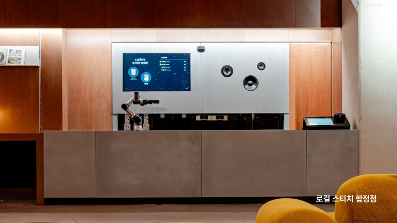
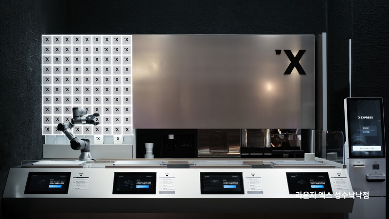
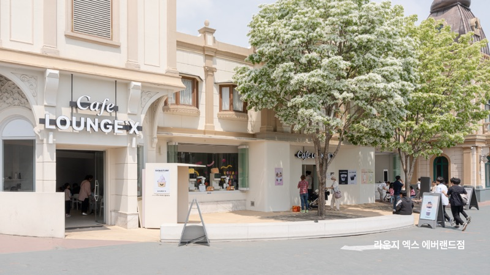
운영 · 결제 지원
1
운영 모드
- 관리자의 운영방식에 맞춰 AI 무인 혹은 협동 운영모드로 설정 변경 가능
2
지원 모션 모드
- 기본 드립 모션
- 챔피언 드립 모션
3
결제 지원
- 신용카드, 체크카드
- 삼성 페이 (* 애플페이 추후 지원)
Process
구매 절차 60일 소요
1
상담 / 실측
[ 협의사항 ]
- 메뉴 : 사용 원두 협의
- 관리 : 클라우드 서비스
- 설치 : 현장 여건 점검
- 전기(1.5kw), 통신(1회선), 급배수
2
계약 체결
[ 구매 및 공급 계약 ]
- 제품 계약
- 초도 구매 물품 확정
- 설치 도면
- 인테리어 및 설비 도면 확인
3
설치
[ 서류 (필요시) ]
- 사업자등록증 계약에 필요한 서류
- 영업 신고 및 카드 가맹
- 제품 설치
- 운영 테스트 및 교육